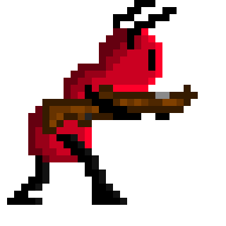

Game Type:
2D Shooting Web Game
Roles:
Game Designer, Artwork Designer and Programmer
Tools:
Python, Marmoset Hexels 3, Photoshop


2D Shooting Web Game
Game Designer, Artwork Designer and Programmer
Python, Marmoset Hexels 3, Photoshop
Ant Lion is a digital 2D shooting game. The player will act as an ant during the game, try to enhance their weapon during their adventure and finally beat the boss: the ant lion. I was taking charge of the game principles and art work design in this proejct.
Our coremechanic is jumping, shooting and running, and secondary mechanic is picking up power-ups,such as weapon upgrades and a health kit. Our game is hard fun, as the player needs toovercome challenges throughout the game and can possibly lose if they fail those challenges.We are classifying our game using the MDA Fun Types as a “challenge” because our game’smain goal is to challenge the player, and not serve as a sensory experience or casual past time.For BrainHex player types, we are continuing to target “survivor” players and adding in“conquerors” as another player type we will target. For “survivor” players they will be able toenjoy the running, jumping, and shooting as they are being chased by the enemy. “Conqueror”players will find challenges, such as taking the shortest path and fighting the boss with thedefault weapon, or they can prolong the game and pick up all the possible chances ofincreasing their hit points. With the second approach for conquerors, they will feel that theydominated the Ant Lion with a more powerful weapon and receive a feeling of satisfaction as aresult of domination. “Achievers” and “daredevils” will still enjoy our game, yet “survivors” and“conquerors” will find our game more enjoyable.Our target audience stays the same, people within the 12 to 24-year-old range and both genderscan enjoy the game.
From our initial proposal we have now introduced a boss fight at the end of each level where theplayer must defeat it before they can mark the level as completed. As well, we have introducedhealth for both the player and the boss. This allows for more interest in the game, as the playerhas more than one shot in playing the game. In comparison to our physical prototype, we havenow included spikes to some of the upper platforms, as this is another challenge for the playersas the risk in losing health is greater when attempting to pick up better weapons in the game.This can motivate the players to take on a greater challenge in picking up a stronger weapon orface the boss with a standard weapon. We also modified the idea of increasing hit points andkeeping the same “weapon” throughout the entire game. Instead, now when the player choosesto get a new weapon they can exchange their previous weapon with a stronger one that willassist them in their fight with the boss. Each time the player obtains a new weapon they will geta slightly stronger weapon, if they choose to get a new weapon each opportunity they are giventhen they will have the strongest weapon. In comparison to our physical prototype, the playerwas only able to deal one damage at a time regardless of how many weapons they had,however, now in our digital version the player damages the Ant Lion based on the weaponpower (DPS) they possess. This aspect was much easier to simulate on a digital versionbecause we weren’t able to simulate real time in our physical prototype. One additional featureon the digital version is the moving surge of ants that forces the player to keep moving right.The surge creates an urgency in the game, and prompts a separate challenge to the player. Much like the weapon damage, we weren’t able to simulate this on the physical copy becausewe couldn’t simulate real time movement of an animated surge.
As we have mentioned in the last storyboard, players who choose to take a risk and gets weapon upgrade may lead to have a lower health in the final boss battle, yet they can beat the boss much quicker with a faster DPS. Low risk players may have a higher HP in the boss battle, but slower hit points this will cause them to spend more time on defeating the enemy. We have worked hard on balancing the weapon upgrade system in the game. For those who just want to beat the game, we have weakened the boss in easy and medium mode, so they can enjoy it more. On the other hand, players who want a challenge they can play the difficult mode.
For the digital prototype we implemented most parts of our previous storyboard. First, we successfully implemented the boss fight. After escaping from the deadly ant wall successfully, the player will face the antlion. They need to do their best to beat the boss in order to get to their ant hill. We have created various routes for the player to choose. They are free to choose any route they desire. We kept the risk-taking aspect from our previous storyboard. Some of the weapon enhancement pieces are placed in a dangerous position. Thus, players who want to obtain these items must consider the risk of losing health in doing so.
I spent a lot of time designing some pixel artwork, however we didn’t have time to implement them in our digital version. We can certainly use these pixel art work to improve the visual aspect of our game moving forward. These are only a small portion of the artwork created for this specific ant lion redesign.
The challenges presented in the game are as follows: avoiding contact with the Ant Lion, avoiding spikes, not falling through the map, outrunning the tribe of ants and defeating the Ant Lion boss. The core mechanics are shooting, running, and jumping. The secondary mechanic includes picking up power ups, such as a stronger weapon which allows the player to overcome the boss easier. By running and jumping the player can outrun the surge, and avoid contact with the spikes and the holes in the map. By avoiding coming in contact with the obstacles, the player will retain full health. Using the core mechanics to maneuver from one platform to another, the player can reach the weapon upgrades. The reward of obtaining a weapon power up is that the player will deal damage at a faster rate (increase DPS), which can assist the player in defeating the Ant Lion faster. Overall, these actions made by the player will help them achieve a faster time, all dependent on how the player decides to play the game.
Caleb Taylor, David Cao, Ethan Zhu, Theo Tang